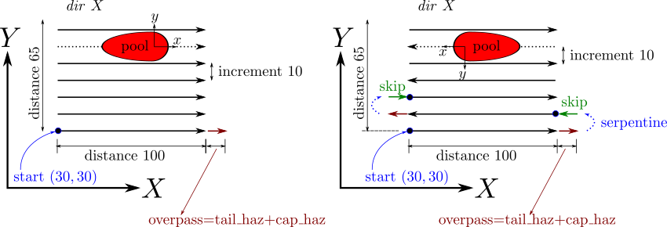

Syntax:
am_cartesian_layer layer_id start_position x y pass_id p_id transverse_pass_id t_id serpentine switch
Examples:
am_pass 1 dir X distance 100.0 speed 10.0 am_transverse_pass 1 distance 65.0 increment 10 am_cartesian_layer 1 start_position 30 30 pass_id 1 transverse_pass_id 1 serpentine 0 am_cartesian_layer 2 start_position 30 30 pass_id 1 transverse_pass_id 1 serpentine 1
Description:
This command is used in the potts/additive application to specify the cartesian_layer subcomponent of a raster pattern. Multiple cartesian_layers can be defined in a single input file, using unique id values.
The start_position values x,y are typically the bottom-left corner of the simulation domain.
The pass_id value p_id is defined by the pass command. The transverse_pass_id value t_id is defined by the transverse_pass command.
Note that the x,y values are pass sensitive. If a pass defines dir X, then the start_position should be at the lower left corner of raster domain (as defined by the pass and transverse_pass). If the pass defined dir Y, then the start position should be at the lower right corner of the raster domain. See a schematic of the latter case in the pass command.
In the above example, two unique layers (with and without serpentine) are created. Note re-use of the pass and transverse_pass commands. The schematic below depicts the two layers. Note how overpass interacts with serpentine.
Restrictions:
This command can only be used as part of the app_style potts/additive application.
Related commands:
am_pass, am_transverse_pass, am_pattern
Default: none